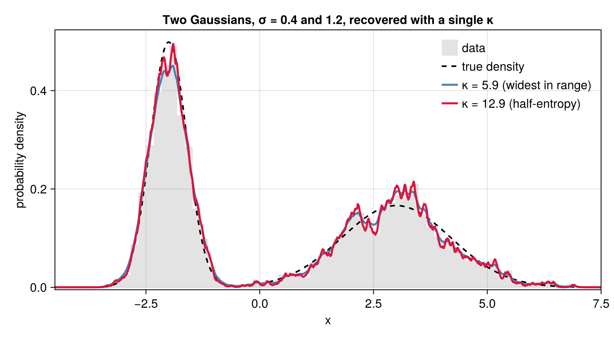
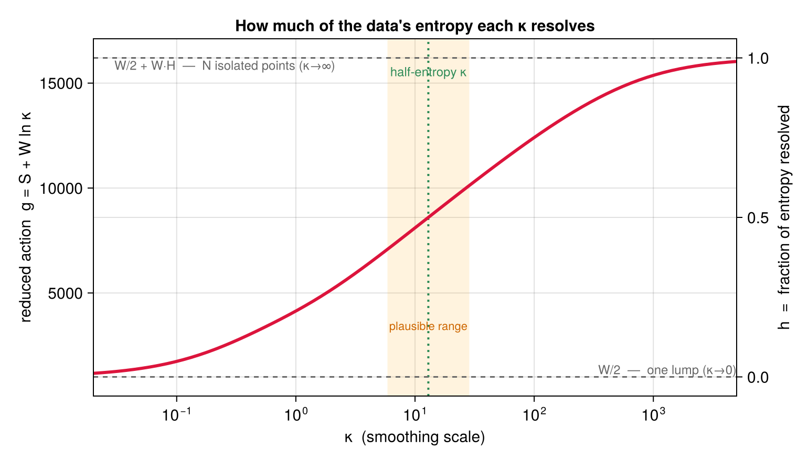
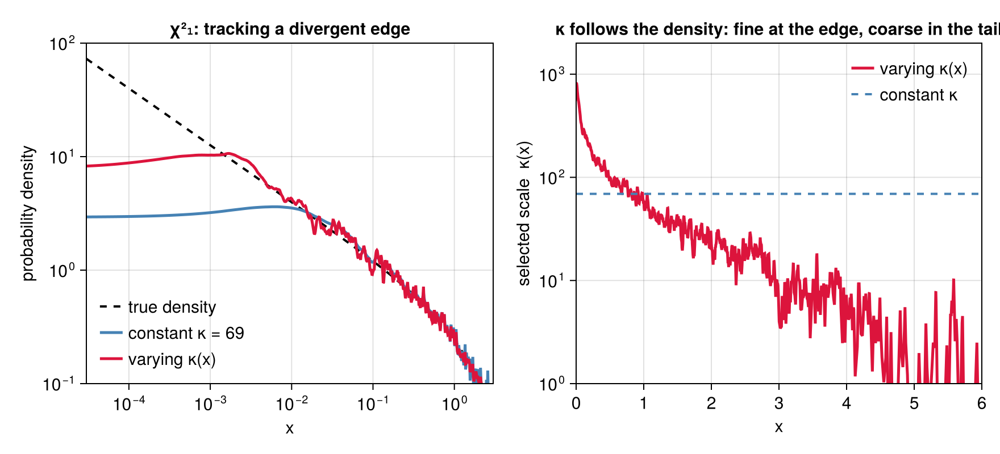
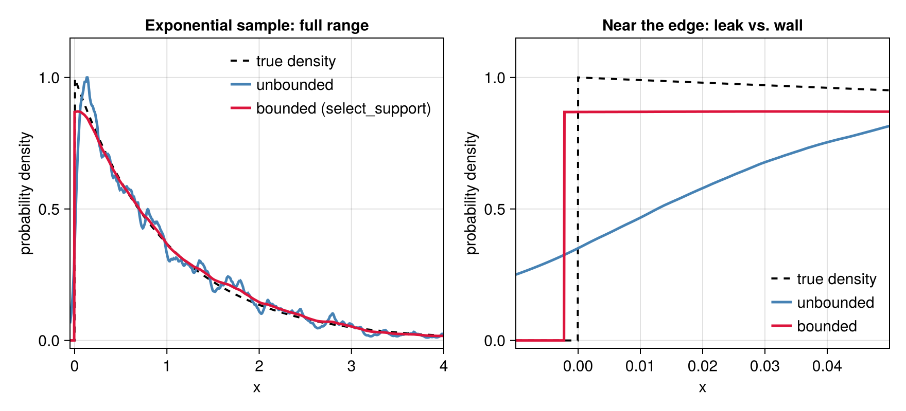

Tutorial
This walkthrough fits a bimodal distribution, chooses the smoothing scale, and tests candidate models against the data.
A worked example
Consider a mixture of two Gaussians with equal weight, a narrow one ($\sigma=0.4$) centered at $x=-2$ and a broad one ($\sigma=1.2$) at $x=3$. First let's draw some samples from this distribution:
using Random
Random.seed!(42)
comps = [(w=0.5, μ=-2.0, σ=0.4), (w=0.5, μ=3.0, σ=1.2)]
truepdf(x) = sum(c.w * exp(-((x - c.μ) / c.σ)^2 / 2) / (c.σ * sqrt(2π)) for c in comps)
N = 2000
xs = [rand() < comps[1].w ? comps[1].μ + comps[1].σ * randn() :
comps[2].μ + comps[2].σ * randn() for _ in 1:N]To construct an estimate of the density from the points xs, we first select a smoothing length scale and then construct the density:
using PenalizedDensity
κ = select_kappa_kl(xs) # recommended scale (KL cross-validation)
d = DensityEstimate(xs, κ) # fit at the recommended scaleκ determines the amount of smoothing: the amplitude of the density estimate will decay over a length scale 1/κ. d is a callable density: d(x) returns the estimated density at a single point x. Let's plot this estimate (constructed using the recommended select_kappa_kl to compute the scale), along with the result for a different $\kappa$ estimator, the half-entropy as computed by kappa_interval:
using CairoMakie # for plotting
ki = kappa_interval(x) # alternative estimator for scale
d_half = DensityEstimate(x, ki.κ) # construct the alternative estimate
g = range(-4.5, 7.5; length = 800)
lines(g, truepdf.(g); linestyle = :dash, label = "true density")
lines!(g, d.(g); label = "κ = $(round(κ, digits=1)) (KL, recommended)")
lines!(g, d_half.(g); label = "κ = $(round(ki.κ, digits=1)) (half-entropy)")
axislegend()
Both scales recover both peaks: the recommended KL $\kappa$ is visibly smoother, the half-entropy $\kappa$ sharper, but each resolves the narrow and the broad component at once. Note that κ is a resolution scale, not a component width. Its reciprocal $1/\kappa$ is smaller than either component's $\sigma$, so the estimator resolves features of any larger width, which is set by the underlying distribution and the data obtained by sampling from it.
Choosing the smoothing scale
PenalizedDensity offers four automatic selectors. They split into two families: two that target estimation error (recommended for smooth data) and two that resolve information in the data (the right choice for heavily tied or discrete data). The recommended default is select_kappa_kl, which minimizes a likelihood (Kullback–Leibler) cross-validation score:
κ_kl = select_kappa_kl(xs) # recommended: error-optimal, likelihood cross-validation5.134113841720841Its score is the leave-one-out log-likelihood $-\tfrac1N\sum_i \ln \hat Q_{-i}(x_i)$, where $\hat Q_{-i}(x_i)$ is an estimate at the point $x_i$ formed from all points except $x_i$ itself. This score is an estimate of $\mathrm{KL}(Q \,\|\, \hat Q_\kappa)$ up to a constant; it is the criterion native to the estimator, whose action is itself a log-likelihood. A close relative, select_kappa_cv, instead minimizes a least-squares (MISE) cross-validation score:
κ_cv = select_kappa_cv(xs) # least-squares cross-validation (MISE)5.534890166125478Both are evaluated analytically — each leave-one-out density comes from a first-order expansion of the fit, so no point-by-point refitting is needed — and to leading order they select the same $\kappa \propto N^{1/5}$. Across a range of test densities select_kappa_kl tracks the error-optimal scale most closely (see benchmarks/) and is the cheaper of the two, which is why it is the default. Both assume a continuous underlying density; on heavily tied or coarsely rounded data their scores are unbounded as $\kappa\to\infty$, and the two information-resolving selectors below are the better choice.
The first information-resolving selector, kappa_interval, returns a principled scale with a plausible range. Its basis is that the reduced action $g(\kappa) = S(\kappa) + W\ln\kappa$ ($W$ = total count) rises monotonically between two exact limits — $W/2$ as $\kappa\to0$ (all points merge into one lump) and $W/2 + W H$ as $\kappa\to\infty$ (the $N$ points become isolated), where $H$ is the Shannon entropy of the data. The normalized quantity $h(\kappa)\in[0,1]$ is thus the fraction of the data's entropy that $\kappa$ resolves, and its half-point is the returned scale:
ki = kappa_interval(xs) # (; κ, lo, hi): the half-entropy scale and a band
(κ = round(ki.κ, digits=1), lo = round(ki.lo, digits=1), hi = round(ki.hi, digits=1))(κ = 12.9, lo = 5.9, hi = 28.5)The picture below makes this concrete. The reduced action (red) climbs from its $\kappa\to0$ floor $W/2$ (nothing resolved, $h=0$) to its $\kappa\to\infty$ ceiling $W/2 + W H$ (every point resolved, $h=1$); both dashed limits are exact and depend only on the counts. The returned scale is where the curve is halfway up — half the entropy resolved — and the shaded band is the plausible range:

The second information-resolving selector, select_kappa_ms, returns a related but distinct scale: the point of minimum sensitivity, where |dS/d ln κ| is smallest. Its derivative is computed analytically, so the result is free of the noise that finite-differencing the action curve would introduce.
κ_ms = select_kappa_ms(xs) # minimum-sensitivity scale11.860042592604607select_kappa_ms and kappa_interval generally select different scales, but both resolve information in the data rather than minimizing error, and on smooth densities they tend to over-resolve — which is why the cross-validation selectors are recommended by default. Their value is on heavily tied or discrete data, where they stay bounded and the cross-validation scores do not.
Letting the scale vary across the data
Every selector above returns one $\kappa$ for the whole line, and a single scale has to compromise: fine enough to resolve the peaks, coarse enough to stay quiet in the tails. On a smooth density that compromise costs little. But when the density is irregular — a divergent or discontinuous edge, a kink, a heavy tail — a constant $\kappa$ is limited not by noise but by the density's own shape, and no choice of it is good everywhere.
select_kappa_adaptive lifts the compromise by letting the scale follow the density, $\kappa(x)$ large where the density is high, and small where it is low. In other words, the smoothing length scale will grow with the size of the expected gap between adjacent sampled points.
As an example, take a $\chi^2_1$ sample, whose density diverges as $x^{-1/2}$ at the origin:
using PenalizedDensity, Random, Statistics
Random.seed!(7)
z = randn(4000) .^ 2 # χ²₁: the density diverges at x = 0
κ_const = select_kappa_kl(z) # one scale everywhere
κ_var = select_kappa_adaptive(z) # a scale that follows the densityAdaptiveScale(c=106.86789936058177, α=1.0) over a pilot with 3997 nodesThe adaptive selector returns an AdaptiveScale — a callable $\kappa(x)$ — which DensityEstimate takes exactly where a number would go:
d_const = DensityEstimate(z, κ_const)
d_var = DensityEstimate(z, κ_var)DensityEstimate with 4000 distinct nodes, 4000.0 total weight, κ ∈ [0.00010686789936058177, 811.4616783219337], λ=3926.574964336312Below, the left panel shows true underlying density (dashed) and the two estimates d_const and d_var; the right panel shows how κ_const and κ_var depend on position.

Neither density estimate can track much below $x \approx 10^{-3}$ (typically, fewer than one hundred points land within [0, 1e-3]), but the adaptive one tracks the power law to about tenfold-smaller x than the one with constant κ. The payoff is measurable on held-out data — the mean log-likelihood of a fresh sample, whose gap is the reduction in KL divergence, in nats per sample:
ztest = randn(4000) .^ 2
loglik(d) = mean(log.(d.(ztest)))
(constant = round(loglik(d_const); digits = 3),
varying = round(loglik(d_var); digits = 3),
gain = round(loglik(d_var) - loglik(d_const); digits = 3))(constant = -0.96, varying = -0.838, gain = 0.122)Concretely, how is $\kappa(x)$ determined? The rule is a plug-in of the variable-bandwidth kind; Abramson's square-root law, Ann. Statist. 10, 1217 (1982), is the $\alpha = 1/2$ member. A pilot fit $\hat p$ at the constant scale supplies the shape, and the scale is drawn from the family $\kappa(x) = c\,(\hat p(x)/\bar g)^{\alpha}$ ($\bar g$ the geometric mean of $\hat p$ over the sample). Both the overall scale $c$ and the exponent $\alpha$ — how strongly $\kappa$ follows the density — are chosen by the same leave-one-out KL score that select_kappa_kl minimizes, generalized to a varying scale and still evaluated in closed form and in $O(N)$:
(c = round(κ_var.c; digits = 1), α = κ_var.α) # the selected scale and exponent(c = 106.9, α = 1.0)Crucially, the constant scale competes in that same comparison: it's the $\alpha = 0$ member of the family, $\kappa(x) = c$, so adaptivity is used only when it wins. When it does not, the selector says so by returning a plain number rather than an AdaptiveScale — as on uniform data, where $\kappa \propto \hat p^\alpha$ has no contrast to exploit:
select_kappa_adaptive(rand(2000)) isa Real # nothing to buy: the constant scale winstrueFitting a hard edge
A varying scale sharpens resolution near a feature, but it still fits an amplitude built from exponential tails, which extend over all of $\mathbb{R}$. When the true density has a genuine edge — zero on one side, nonzero on the other — no choice of $\kappa(x)$ reproduces that exactly: the fit always leaks a sliver of mass across the line. DensityEstimate's support keyword fixes this directly, by imposing a natural (Neumann) boundary condition at a finite endpoint rather than approximating it with decay; select_support chooses that endpoint from the data, the same way the other selectors choose $\kappa$.
As an example, take a sample from the standard exponential distribution, whose density jumps from 0 to 1 at $x=0$:
using PenalizedDensity, Random, Statistics
Random.seed!(11)
N = 1500
x = -log.(1 .- rand(N)) # exponential(1): a jump edge at x = 0
κ_const = select_kappa_kl(x)
d_unbounded = DensityEstimate(x, κ_const)
(κ = round(κ_const; digits=1), leaked_mass = round(cdf(d_unbounded, 0.0); digits=4))(κ = 16.8, leaked_mass = 0.0104)leaked_mass is cdf(d_unbounded, 0.0), the fitted probability of landing on the wrong side of the true edge: about one percent of the fit's mass sits below x = 0, where the true density is exactly zero. select_support finds a left wall that removes this directly:
r = select_support(x)
d_bounded = DensityEstimate(x, r.κ; support = r.support)
(wall = round(r.support[1]; digits=5), κ = round(r.κ; digits=2), cdf_at_wall = cdf(d_bounded, r.support[1]))(wall = -0.00221, κ = 3.55, cdf_at_wall = 0.0)cdf_at_wall is exactly 0, not merely small: mass cannot cross a natural boundary. Note also that the selected scale drops to about a fifth of κ_const — the unbounded fit was over-sharpening to fight the leak, and no longer needs to once the wall is doing that job (the search re-optimizes κ at every boundary candidate; see select_support's docstring). The wall itself sits close to the data:
spacing = PenalizedDensity._edge_spacing(sort(x), :left) # mean spacing of the 10 points nearest the edge
gap = minimum(x) - r.support[1]
round(gap / spacing; digits=2)5.0which is the search's hard floor: select_support never places a wall closer than five mean edge-spacings to the data, because a boundary any closer reflects the nearest interior points back onto themselves and inflates their leave-one-out likelihood on any sample, edge or not, not only this one. On a genuine hard edge this floor is usually where the search lands, as it does here; a smooth sample has no edge to find in the first place, and the search says so plainly by returning the unbounded candidate:
xg = randn(1500)
rg = select_support(xg)
(support = rg.support, κ_matches_plain_selection = rg.κ === select_kappa_kl(xg))(support = (-Inf, Inf), κ_matches_plain_selection = true)support == (-Inf, Inf) and the returned κ is not merely close to select_kappa_kl(xg) but identical to it — the unbounded candidate always competes, and here it wins outright.
To combine a boundary with a varying scale, pass the chosen support on to select_kappa_adaptive so that its own search runs on the bounded domain:
κ_composed = select_kappa_adaptive(x; support = r.support)
d_composed = DensityEstimate(x, κ_composed; support = r.support)
(α = κ_composed.α, c = round(κ_composed.c; digits=2))(α = 0.25, c = 4.54)We can test whether this fit is a genuine improvement by generating independent data from the same underlying distribution:
xtest = -log.(1 .- rand(N))
loglik(d) = mean(log.(d.(xtest)))
(unbounded = round(loglik(d_unbounded); digits=3),
bounded = round(loglik(d_bounded); digits=3),
bounded_and_adaptive = round(loglik(d_composed); digits=3))(unbounded = -1.105, bounded = -1.027, bounded_and_adaptive = -1.024)The wall accounts for essentially all of the gain here: once it has absorbed the edge's leak, little irregularity is left in an otherwise-exponential interior, and the two scores agree to within the noise of a fresh N-point sample. The picture below makes the boundary's effect on the fit itself concrete — the unbounded estimate (blue) trailing off below x = 0 where the true density (dashed) is zero, against the bounded estimate (crimson), pinned flat at the wall:

Goodness of fit
Because the estimate is a genuine likelihood fit, you can ask how well a specific model distribution describes the data. Using the fit d from above, chisq is a robust, binning-free $\chi^2$ (the squared Hellinger distance between a trial density and the data):
wrong(x) = exp(-((x - 0.5) / 2.5)^2 / 2) / (2.5 * sqrt(2π)) # a single broad Gaussian
(correct = round(chisq(d, truepdf); digits = 1),
incorrect = round(chisq(d, wrong); digits = 1))(correct = 38.2, incorrect = 2151.3)The true mixture yields a far smaller $\chi^2$ than the mismatched single Gaussian. pvalue turns the statistic into a significance under the reference distribution of $\chi^2$ — the exact finite-$N$ law (a generalized chi-squared), computed by default:
(p_correct = round(pvalue(d, truepdf); digits = 3),
p_incorrect = round(pvalue(d, wrong); digits = 6))(p_correct = 0.253, p_incorrect = 0.0)The single Gaussian is decisively rejected; the true mixture is not. chisq_pdf / chisq_ccdf give the reference density and upper-tail probability, and expected_chisq its mean. To test many trial densities against one fit, build the reference once with chisq_reference and reuse it:
ref = chisq_reference(d)
(mean = round(expected_chisq(ref); digits = 2),
p_correct = round(pvalue(ref, chisq(d, truepdf)); digits = 3))(mean = 34.54, p_correct = 0.253)The exact law is a per-call integral (Imhof inversion): accurate, but tens of milliseconds apiece. Passing method = :largeN selects instead the closed-form inverse-Gaussian (Wald) shape of the original paper's large-$N$ limit, parameterized by the exact mean expected_chisq; it costs microseconds, so a large batch of trial densities against one fit is far cheaper. Anchored to the exact mean, it tracks the exact tail closely rather than overstating it:
(exact = round(pvalue(d, truepdf); digits = 3),
largeN = round(pvalue(d, truepdf; method = :largeN); digits = 3))(exact = 0.253, largeN = 0.25)All of this — the exact law and the :largeN shape alike — works unchanged on a fit at a varying scale or a finite support: both are read from the same reference the fit assembles, in the same $O(N)$.
Entropy and negentropy
Because the fit is a smooth density, its information content follows in closed form. entropy is a plug-in estimate of the differential entropy $H(Q) = -\int Q \ln Q$, and negentropy is the entropy deficit relative to the Gaussian of the same mean and variance — a scale-free measure of how non-Gaussian the density is, zero for a Gaussian and positive otherwise:
(H = round(entropy(d); digits = 3), J = round(negentropy(d); digits = 3))(H = 1.747, J = 0.652)The bimodal fit is strongly non-Gaussian, so its negentropy is well above zero. negentropy is invariant to shifting and rescaling the data (with the matching $\kappa \mapsto \kappa/|a|$), so it measures shape alone.
Both quantities also take a second argument of held-out points — data that did not enter the fit — in which case $\ln \hat Q$ is scored there and the Gaussian reference uses the held-out sample's own variance:
xeval = [rand() < comps[1].w ? comps[1].μ + comps[1].σ * randn() :
comps[2].μ + comps[2].σ * randn() for _ in 1:1000]
(H = round(entropy(d, xeval); digits = 3), J = round(negentropy(d, xeval); digits = 3))(H = 1.737, J = 0.667)The held-out negentropy is close to the in-sample value here because the fit generalizes well. Scoring on points that did not build the fit is what makes the held-out form informative: unlike the in-sample value, it is not inflated by concentrating the density onto the fit sample, the same reason select_kappa_cv cross-validates.
The derivatives of the log density are exposed directly: logdensity_eval_gradient gives $\partial \ln \hat Q(y)/\partial y$ in closed form, and logdensity_node_gradient gives the gradient of a weighted sum of log densities with respect to the node positions, by an implicit-function adjoint that reuses the fit's factored Hessian in a single extra tridiagonal solve. Both are documented in the API reference.